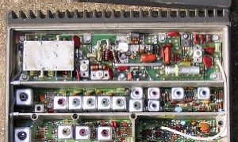
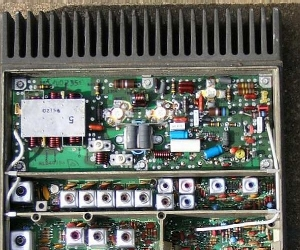
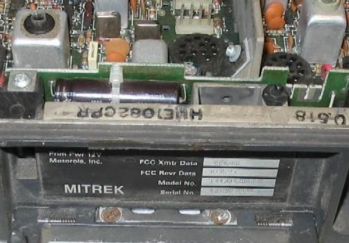

Decoding Mitrek Model and Chassis Numbers
Comments and additional material are welcome
(even "Hey - you've got a typo at..." messages)
In this article I'm attempting to help identify the model and chassis numbers of Mitreks that are good for both repeaters and for links. I've deliberately left out the 800mhz and 900mhz radios since I have no manuals or hands-on experience with them.
There is additional Mitrek information available on the Repeater-Builder web site at the main Mitrek index page.
This web page is intended to be use by folks that have some familiarity with Moto model numbers. All of the Motorola model numbers from the Mitrek and earlier vintages are in a standard predictable format that tells the frequency band, power level and options of the radio. Please see the general "Figuring out what you have" page at http://www.repeater-builder.com/motorola/motorola-suffixes.html for the basic info. I am going to assume that you are familiar with that web page as I continue here - all that is on this page is Mitrek-specific information.
The Motorola Mitrek series radios are very desirable for building repeaters and link radios despite the fact that the early versions are almost 20 years old...
As far as using a Mitrek in amateur repeat or link service, remember that the Mitrek mobile transmitter was not designed to be a 100% duty cycle transmitter. In fact, Motorola states in the manual that the Mitrek is a 20-25% duty cycle radio. Mobile radios inherently have undersized heat sinks, so to keep the heat rise down make sure you keep the output power at no more than half of the rated output (the lower the better, but Mitreks get dirty and squirrely if run too low). Obviously the lower the power on the same sized heat sink means the low power ones are preferred for repeat / link service - even a low power radio at half power is enough to drive an external amplifier to whatever power level you can afford. And pont-to-point links can use directional antennas... 5w into a 10db yagi gives the same performance as 50w into an omni with a lot less RF power involved, which means less DC power which means a smaller DC power supply and a lower AC power bill. The lower RF power also means you need less isolation in the antenna system, which translates into less duplexer is required...
If you need a Mitrek manual please see this "How to Order Parts and Manuals" web page. The
low band, high band and UHF radios are pretty much the same in
the non-RF areas, but the RF sections are different enough that
you can't do much if you don't have the right manual... (besides,
you'll need the right manual when it comes time to tune it up)
In this manuals list below the "n" takes the place of a number
that describes the transmitter power, explained later...
As long as your are ordering manuals, you will want to order the Mitrek tuning tool set, part number 66-82977K01 (unless you have a huge collection of diddle sticks - I have the standard 20-year collection that fills a large wooden cigar box.... even a piano tuner's wand for doing the old solenoid-tuned wide-spaced UHF Motracs). The real Mitrek tool is (as of May of 2004) only $2.92 and breaking a slug with the wrong tool is not worth three dollars.
Unfortunately the "Mitrek Plus Supplement", part number is 68-81046E05 no longer available. The Plus series, according to the manual's introduction, "is a mobile radio intended for use in critical applications. It is similar to the basic Mitrek radio with enhanced specifications in three categories, (1) reduced transmitter distortion, (2) increased receiver selectivity, (3) increased audio power output with reduced distortion." The first and second are definitely attractive to repeater and link operations in the amateur radio world..., the last makes sense in a public safety environment - you'd want to be able to hear and understand the dispatcher when the siren is going...
The "Plus Supplement" also notes that the Mitrek is an all-metric radio - don't casually mix the leftover screws into your parts bin.
According to the supplement manual the
differences in actual numbers are:
| "Mitrek" vs "Mitrek Plus" specifications differences | ||||
| Transmitter distortion |
Receiver selectivity |
Audio Power |
Receiver Distortion |
|
| Mitrek | 3% | 95db (low band) 90db (UHF) |
8w | 5% |
| Mitrek Plus |
2% | 100db (low band) 90db (UHF) |
10w 12w with "Plus" cable kit and "Plus" speaker |
3% |
Despite the book saying that the UHF performance is the same, my personal experience is that it's noticeably better, I personally think that one of the "90db"s in the UHF Plus section is a rather critical typographical error.
The additional selectivity comes from adding a 5th 2-pole crystal filter, labeled as Y204 on the main circuit board, physically right in front of L206. The main boards were apparently designed for it all along, the early radios had a jumper (J201) in place of it.
The additional audio power output comes from using different (more powerful) audio PA devices and doubling the value of the two large electrolytic capacitors (physically located on the interconnect board) in series with the speaker to 1,000uf.
The reduced transmitter and receiver distortion is accomplished by tuning with an audio distortion analyzer - the hardware is the same, the basic tuneup procesures are the same, they just do the fine tuning at the top of the peak or the bottom of the dip with the distortion analyzer. The old Heathkit distortion analyzers are on eBay all the time and you might want to consider picking one up. Get a manual also for the operational information... A lot of equipment can be used without reading the manual, a distortion analyzer fitrs into the category of "not really".
There are no external markings on the Mitrek indicating a Plus configuration over the standard configuration - and if you don't know exactly where to look for Y204 - that extra crystal filter - on the main board then the Plus radios can only be identified by the chassis number. The presence of the 1,000uf capacitors on the interconnect board is not always indicative... I've found the larger caps on interconnect boards in radios that didn't have the additional crystal filter.
Motorola made two different Mitrek mobile chassis castings: a low power
with short fins and short PA deck area, and a high power with long fins and
a deeper PA deck. Both fit into the same mobile mounting tray. Here
are photos of both (they happen to be low band radios, but that's only coincidental):
 
Motorola made some Mitreks with a bulged top lid that either:
Motorola also made the "Super Consolette" - a tabletop base station that was available with either a low power or a high power 12vDC supply mounted internally. This base station had a regular mobile radio chassis mounted internally and that chassis was totally complete except for a missing model number / serial number tag. I have actually converted a 470mhz base into a 52mhz base in under 15 minutes by doing no more than pulling one radio chassis and mounting another. The consolette cabinet was essentially a pretty box containing an AC power supply, the guts of a control head, plus some other options, such as a DC or tone remote, a battery-backup option on the internal power supply, channel-scan and a number of other options. However the radio chassis that Moto shipped inside the table-top base cabinets had different chassis numbers than the otherwise identical mobiles. Go figure. I've also seen full duplex Consolettes, and consolettes converted into desktop repeaters (there's enough room under the radio chassis for a flat-pack duplexer, or even a second radio chassis - as long as there is no DC or AC remote cards in that space).
There are four power supply subchassis used in the "Super Consolette":
NOTE: Out of a couple dozen units I have found two Super Consolettes that had a 10.8mhz IF frequency! I don't know if this was a factory option that never made it into the manuals or if these were field converted (both came from locations that had two Consolettes side by side on a desktop or tabletop). The consolette book I have in my file cabinet does not list a 10.8mhz IF as a factory option. If you suspect, even in the slightest, that your Mitrek chassis might have been a base station at any point in it's career CHECK THE IF FREQUENCY before you order the receive crystals. Just check the part number on the side of any one of the IF crystal filters. There is a list of 10.7mhz and 10.8mhz IF filter part numbers in the Mitrek Interfacing writeup on this web site. My older eyes need a dental mirror and a magnifying glass to do that - your mileage may vary.
Motorola radios have two sets of identifying numbers: the model number and the chassis number. In the photo below you can faintly see the T44JJA-3000DK on the model number section of the nameplate and the HUE1082CPR chassis number stamped on the chassis lip. Yes, the "U" has a scratch through it and looks strange in the photo.

The low band book I have does not include the T71 models in it - they jump from T61 to T81. Yet I have seen Mitrek mobile radios with a T71 model label at two different hamfests, and the chassis number was that of a T81 model. Strange.
In the option code the extender option is available only in the low band radios. Other product lines had high band extenders, but the Mitrek didn't.
The rest of the option code digits are very specific to the product line. My Mitrek manuals list 000 and 900, and an email from VE1II provided the 800 code:
Bruce Harvey VE1II's email described some 12 frequency Mitreks that were made with a domed lid that held a board with the additional channel elements. The suffix on his radio is 1800B, with the "1" indicating carrier squelch, the 8 indicating 12 frequency, and the B indicating the chassis revision.
Except for the 12freq Mitrek mobiles the 000 and 900 means nothing as all the radios were the same internally. The 000 means that the radio was paired with a single frequency control group and the 900 means it was paired with a four-frequency control group. In other words the single frequency/multiple frequency difference was in the control head, the control cable (extra wires), and the number of channel elements that were shipped with the radio.
The first letter of the option code suffix is the production line version or revision indicator. The Mitrek started with the A version and the first change bumped it to the B version. I have seen A, B, C and D version Mitrek low band radios, B version high band radios, and C, D and E version UHF radios. There are probably other versions out there. Every Mitrek Plus radio I have seen has a version codes greater than "B".
Mitrek chassis numbers are in the format of three or four letters, four digits and a letter. The first two or three letters in a Mitrek are always "HU" or "MHU". The next letter tells you the band. Next there are 4 digits that are the actual chassis number. The trailing letter tells you the chassis version. You will find the chassis number stamped in black ink just inside the radio on the top of the metal case rim above the latching handle and under the leading edge of the lid - see the photo at the beginning of this article. You will want to take a copy of the tables below with you when you go hamfesting... I personally have a copy in my Palm Pilot.
NOTE: I have no other information on any chassis numbers not listed - everything below came from my Mitrek manuals or from contributed information. Missing information is marked with a "??". If anybody has additional chassis numbers to add, please send them to me but please include at least the model number, and a physical description (long chassis or short chassis, frequency range, 4-freq or 12-freq, with or without duplexer, with or without preamp, with or without extender (low band only), the TX power level, etc) - in other words, enough info that I can figure out what you have well enough that I can add it to the list.
Chassis numbers starting with:
If you have a long-chassis radio that has only one set of channel elements the odds are that you have a 800mhz or 900mhz radio. I am not including any information on the those units below as I have no manual(s) on them. If anybody has a spare manual and wants to send it to me I'll write something up. At least xerox the model number and option tables and send them to me.
In the tables below "Reverse Engineered" numbers are those that appear in the field but are not in any manual. If you find one and can figure it out, send it in and I'll add it.
| VHF low band radio chassis numbers | |||||
| Chassis number | Frequency range Mhz |
Power (watts) |
Extender option |
||
| Mitrek mobile |
Mitrek Plus mobile |
Consolette base * |
|||
| HUB1001B | HUB1043C | HUB1003C | 29.7 to 38.999 | 60 | No |
| HUB1011B | HUB1053C | HUB1013B | 29.7 to 38.999 | 110 | No |
| HUB1002B | HUB1044C | HUB1004B | 39-50 | 60 | No |
| HUB1012B | HUB1054C | HUB1014B | 39-50 | 110 | No |
| HUB1021B | HUB1063C | HUB1023B | 29.7 to 38.999 | 60 | Yes |
| HUB1022B | HUB1064C | HUB1024B | 39-50 | 60 | Yes |
| HUB1031B | HUB1073C | HUB1033B | 29.7 to 38.999 | 110 | Yes |
| HUB1032B | HUB1074C | HUB1034B | 39-50 | 110 | Yes |
| The early low band manual I have does not list any chassis with preamps - in fact the manual does not mention preamps at all. Like the UHF chassis list below, the chassis number would be different if the preamp was present. | |||||
| "Reverse engineered" low band chassis numbers | |||||
| Chassis number | Frequency range Mhz |
Power (watts) |
Extender option |
RX preamp |
Information from |
| HUB1072C | 39-50 | 110 | Yes | No | Paul N1BUG |
| VHF high band radio chassis numbers | ||||
| Chassis number | Frequency range Mhz |
Power (watts) |
||
| Mitrek mobile |
Mitrek Plus mobile |
Consolette base * |
||
| HUD1001B | HUD1053C | HUD1003B | 136-146 | 40 |
| HUD1002B | HUD1054C | HUD1004B | 146-174 | 40 |
| HUD1011B | HUD1063C | HUD1013B | 136-146 | 60 |
| HUD1012B | HUD1064C | HUD1014B | 146-174 | 60 |
| HUD1032B | HUD1074C | HUD1034B | 146-174 | 75/90/110 |
| HUD1031B | HUD1082C | ?? | 136-146 | 75/90/110 |
| As in the low band table above, the early high band manual I looked at does not list any chassis with preamps - in fact the manual does not mention preamps at all. The chassis number would be different if the preamp was present. | ||||
| "Reverse engineered" high band chassis numbers | ||||
| Chassis number | Frequency range Mhz |
Power (watts) |
RX preamp |
Information from |
| (None yet) | ||||
| UHF 403-420mhz and 450-512mhz radio chassis numbers | |||||
| Chassis number | Frequency range Mhz |
Power (watts) |
RX preamp |
||
| Mitrek mobile |
Mitrek Plus mobile |
Consolette base * |
|||
| HUE1001B | HUE1073C | HUE1003B | 406-420 | 30 | No |
| HUE1005B | ?? | HUE1007B | 406-420 | 30 | Yes |
| HUE1002B | HUE1074C | HUE1004B | 450-470 | 30 | No |
| HUE1006B | ?? | HUE1008B | 450-470 | 30 | Yes |
| HUE1011B | HUE1083C | HUE1013B | 406-420 | 50 | No |
| HUE1015B | ?? | HUE1017B | 406-420 | 50 | Yes |
| HUE1012B | HUE1084C | HUE1014B | 450-470 | 50 | No |
| HUE1016B | ?? | HUE1018B | 450-470 | 50 | Yes |
| HUE1031B | HUE1116C | ?? | 403-420 | 75/100 | ?? |
| HUE1032B | HUE1094C | ?? | 450-470 | 75/100 | ?? |
| HUE1033B | HUE1095C | ?? | 470-494 | 75/100 | ?? |
| HUE1147A | HUE1157B | ?? | 470-512 | 30 | ?? |
| HUE1153A | HUE1161C | ?? | 470-512 | 50 | ?? |
| HUE1156C | ?? | 494-512 | 75/100 | ?? | |
| "Reverse engineered" UHF chassis numbers | ||||
| Chassis number | Frequency range Mhz |
Power (watts) |
RX preamp |
Information from |
| (None yet) | ||||
Notes:
1) The Consolette base chassis numbers came from a
revision "O" base manual. High band preamps and higher-numbered
chassis were not in the manual. Nor were they in the "O" high
band mobile manual I looked in.
2) The 75 and 100 watt high band chassis are the same. Only
the setting of the power output control is different. The
same holds true for the 75, 90 and 110 watt UHF radios.
3) The factory preamp was not that good - if your Mitrek didn't have one don't
bother trying to find one. An Anglelinear preamp is much, much better.
For UHF amateur radio repeater purposes we are primarily interested in the 450 to 470 Mhz range radios. The 406-420 radios make good 420-430mhz link radios, and are highly prized. Several folk I know are using Mitreks for link radios in the 420-440mhz range of the UHF band. They report that most every 450-470mhz Mitrek they've tried has gone as low as 431mhz, sometimes 430mhz with good RX and TX performance. However if you are planning to use a Mitrek in the 420-430mhz range you really need to look for a 406-420mhz Mitrek. On the other hand the 470-494mhz, 494-512mhz and 470-512mhz radios make pretty good doorstops, especially the high power ones.
Note that there is a "breakpoint" on the chassis number line between the Mitrek and Mitrek Plus radios... with the low band radios it is somewhere between 1032 and 1043, with the high band radios it's in between 1031 and 1053, and on UHF it's between 1053 and 1073. If you find a chassis labled HUE1090 it's probably going to be a Plus radio. You can verify that by looking for crystal filter Y204 and seeing if it is a filter or a jumper.
When you buy your Mitreks, look for ones with the channel elements in them. These are little flat plug in aluminum modules that have the crystal and the oscillator circuit in them. If you have a choice be sure to grab a Plus radio (lok for the extra crystal filter) with the elements in it! More info on this is in the Mitrek Interfacing web page.
If the frequency label on the channel is missing, make sure you verify the channel element model number - I learned the hard way - I once purchased a low-band Mitrek that came with a pair of UHF elements that had the frequency tags very carefully removed...
See the Mitrek / MSR channel element page for more information.Good luck and after you get your Mitrek going please drop me an email and let me know how things went. Sometimes I wonder if anybody reads these missives to the masses...
If you see something above that is vague, missing (or outright wrong), please let me know! It's input from the readers that make these writeups better - I've probably either totally missed or shortchanged topics and /or subtopics that really need to be covered. I can be reached at or my snail mail address available at www.qrz.com.
(I've included the QRZ link above instead of my real snail mail address since my first household move in over 35 years is coming up, and modifying all the web pages at my own schedule over six months saves having to update a lot of web pages at once).
Copyright (c) Michael R. Morris WA6ILQ 2002, 2003, 2004
Last modified 05-August-2004